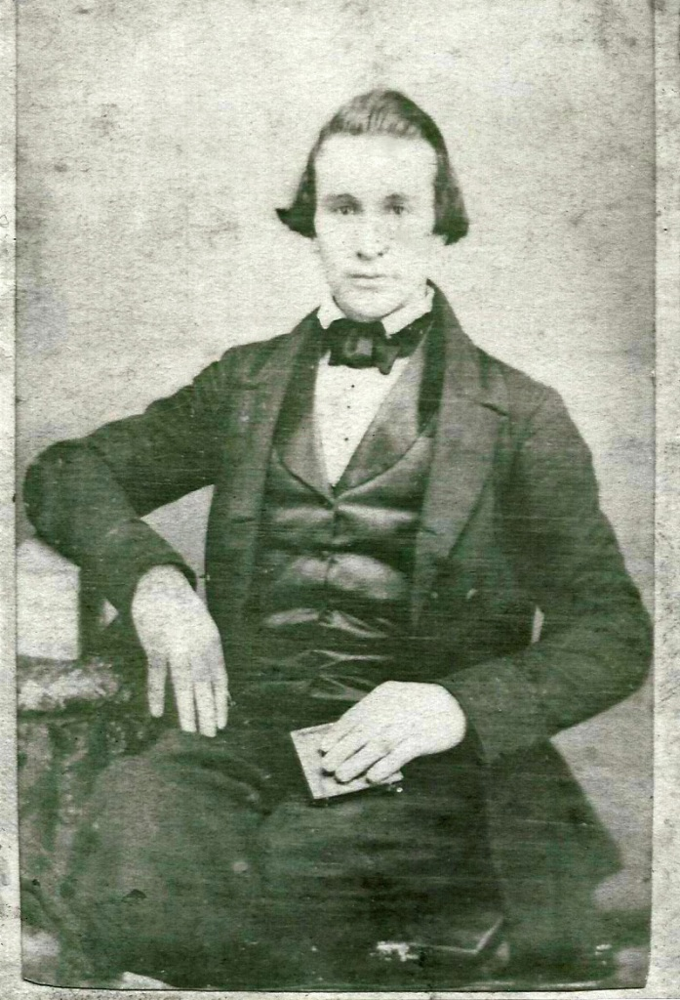

|
|
| 
Rev. Jeremiah B.H. KENASTON (1827-1868) |
Rev. Jeremiah B.H. KENASTON
NOTES: The first Deacon was Henry Smith; first clerk, Peter Smith. In 1851, Rev. Jeremiah B. H. Kenaston came from Vermont and went to the schoolhouse, where services were then held, to preach, but found his congregation outside, one of the school officers, who shall be nameless, having locked it and refused them admission. Nothing daunted, Rev. Kenaston mounted a friendly stump and delivered a most powerful sermon, after which he baptized four persons. He was immediately employed as their pastor at a salary of $60 per annum, his contract calling for sermons one Saturday each month, every first and third Sunday of each month, and "generally a meeting in the afternoon and evening of same day" besides protracted meetings.
Ancestry.com (http://trees.ancestry.com/owt/person.aspx?pid=55340367) Jeremiah married Martha MILLER, daughter of Rev. John Prior MILLER and Mary Jane SHRUM, on 13 Nov 1851 in Jefferson Township, Cass County, Michigan. (Martha MILLER was born on 6 Oct 1833 in Jefferson Township, Cass County, Michigan, died on 12 Aug 1911 in Jefferson Township, Cass County, Michigan and was buried in Reames-Norton Cemetery, Cassopolis, Cass County, Michigan.). The cause of her death was Stroke of Apoplexy. |
 General Notes:
General Notes: